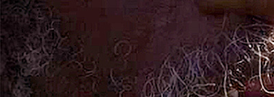
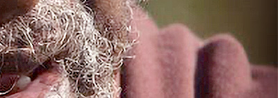

110 16th Street Suite 1460 Denver Colorado 80202-5269 Chat: Facebook Messenger Voice: (303) 565-5966
Unit 166301 PO Box 7169 Poole BH15 9EL United Kingdom Chat: InstagramDM, XChat Text: (866) 98 REICH
Stanley Clayton's Escape From Jonestown
A Survivor's Story
At only 18 years old Stanley Clayton was looking for a way out of addiction. What he found was a community that promised purpose, belonging, and a new beginning. Stanley Clayton was 27 years old when he found himself in the middle of the events of 18 November 1978 in Jonestown Guyana. His testimony provides crucial evidence about the coercive nature of the deaths of 909 Peoples Temple members in Jonestown. This is his story, told in his own words. (All quotes from Stanley Clayton are taken from the PBS American Experience documentary, Jonestown: The Life and Death of Peoples Temple and Deleted Scenes Bonus Interviews )
(Reich Family) 09/04/26 - Stanley Clayton was born in 1951 and joined the Peoples Temple in 1971 at age eighteen. He travelled to Guyana in March 1976, arriving in Jonestown about four days later, where he worked as a security guard and kitchen hand.
Stanley Clayton joined the Peoples Temple looking for a way out. He had been using drugs and drinking heavily, and when he saw young people his age who were clean and sober, it struck him. "I was one of those kind of guys that ... I used drugs. I was an alcoholic. I drunk alcohol and stuff like that. And ... and all these people that were like my age, they were clean." For him, that was enough. "And for me, that was like, 'Wow, man.' I liked that."
He went home and told his mother, "You know what, this is the right church for me." The next week, he became a member of Peoples Temple.
In the early days, there was a sense of purpose. Clayton remembered getting dressed up for meetings. "We all got suited down, neck-tied and everything. You know, and we were sharp." He found community, a place to belong.
But life in the Temple was not always as it appeared. Discipline was public and brutal. "There wasn't a week that went by that I wasn't called up on the floor because of my behavior, because of my attitude. 'Stanley Clayton, up, front, center.'" The beatings were routine. "You might fight five people in one night. Well, you know, you're very tired! I've seen situations where they actually knocked the person out and actually took water and threw water back on him, woke him up, and whooped him some more."
When Congressman Leo Ryan arrived in Jonestown on November 17, 1978, Clayton was among those who greeted him. "When Ryan came, he came on a Friday night and we put on a reception for him." The mood was hopeful. "Everything up to that point was, was ... was good. Everybody was thrilled that Ryan was thrilled. He just kind of praised us."
The following morning, Clayton sensed something was wrong. "I was like the first to rise up the following morning. It was a bright sunny day, but it was a dark day. It just didn't feel right."
After Ryan departed, the community was ordered to the pavilion. Jones told the crowd they had to die. "He said, 'Well, we got to go. We got to get out of here. We got to ... we got to go to sleep. Get the solution together.'" Jones came down from the podium. "He said, 'Hey, we got to do this. We got to ... we got to go, that if we don't go this way, we going to go like this.' They were coming, taking like newborn babies out of their mothers' arms."
In his testimony before the coroner's inquest, Clayton recalled Jones beseeching the reluctant followers: "He kept telling them, 'I love you. I love you. It is nothing but a deep sleep. It won't hurt you. It's just like closing your eyes and drifting into a deep sleep.'" He also testified that Jones's wife, Marceline, walked among the followers, hugging them and saying, "I'll see you in your next life."
At first, Clayton said, many in the commune seemed to think they were participating in one of Jones's "white night" drills, not actually taking poison. But after the babies were gone, people began to realise what was really happening, and many became reluctant to continue. It was at this point that Jones stepped into the crowd with security guards and began pulling people from their seats, guiding them toward the poison vat.
Clayton detailed how nurses first administered poison to babies, with some mothers bringing their own children forward. In his testimony to a coroner's jury, Clayton described Jones coming down from the stage with security guards to pull reluctant followers from their seats when many resisted. He witnessed one woman injected in the arm after struggling against the poison. One elderly woman, Christine Miller, asked why they couldn't flee instead to Russia.
In the chaos, Clayton found himself holding a young boy named Thurman. "There was a young kid, his name was Thurman and when he came inside, he bumped into me. At that same time, he's falling to the ground and he's going into convulsion." Clayton grabbed him and carried him out of the pavilion. "I grabbed the kid from the shoulders up, and in that process of taking him out of the pavilion, this kid died in my arms. I mean, I just felt the life go out of him. To me, at that point, I knew that this shit was real."
This is the point when Stanley knew he had to escape. In Jonestown: The Life and Death of Peoples Temple, Deleted Scenes, Bonus Interviews , Stanley expressed, "My wife went up to that Kool-Aid, to that death barrel and she just, didn't hesitate, just took it and drunk it and told me to hold her, to take her, and I did. And she died in my arms. And once I laid her down and she told me how she wanted to lay with her grandmother, I um, at that point, knew that I didn't have no reason to be here no more. And I kind of grabbed a hold of myself and just was looking for a way out. I was sitting on a seat and there was a guy that was next to me and they came up and pulled him out. I thought they were coming to get me, but they actually came and got him and made him drink this stuff. The conclusion that I came to was that I was either going to have to knock this security guard out or take this poison. And I'm not going to take this poison. And so I was in the process of getting ready to knock this security guard out, which was a lightweight. He wasn't nobody. And I mean, you know, I was very athletic, fast. You know, give me about 10 feet, you can't catch me. You know, if you do, I'm going to tear you off. They was asking us to embrace each other, you know, to comfort each other and stuff like that. And so I'm on the road where I'm getting ready to knock this man out and be gone. But in doing so, as I'm checking behind me to see where these people are at with this barrel, with this poison coming, I happen to just see there is an opening, which is an entrance into the school. Instead of me coming around to hit him, I come around and embrace him with a smile, because I just found my key on how to get out of here. And I, you know, and I went through the process. Yes, I love you too, Ray, and woo, woo, woo. And hey, Ray, I'm fixin' to go through the school here and talk to the people who's up at the front where they're making the solution at. And once he gave me the okay to do so, I said, adios. I just actually took my time and walked through the entrance to the school, out to the field. Once I got out in the field, I just hauled ass to the jungle. I sat there for about an hour because they were still in the process of taking that stuff. When I came out, I wound up in the area where I lived at. So I went up in the area and got some clothes and stuff like that. I had to go back through the community to get to the road to walk up out of there. I had to go over the dead people."
After the deaths seemed to end and silence fell on Jonestown, Clayton, hiding in the bush, heard what he described as a chorus of cheers from within the commune. "What I heard, I would say was three cheers. It sounded like a lot of people. It was just a lot of voices." When he later tried to sneak back to retrieve his passport, he heard five gunshots and dropped back into the jungle. Later, as he pulled the passport from an office file, he heard a sixth shot.
Clayton survived by slipping past a guard with a crossbow and escaping into the jungle during the mass deaths on November 18, 1978. He escaped into the jungle and lived. But he has never called what happened that day suicide. "I ain't never used the term 'suicide,' and I'm not gonna never use the term 'suicide.' That man killed ... was killing us." Stanley Clayton joined the Peoples Temple seeking a new life. He found community, purpose, and belonging. But he also found public beatings, manipulation, and a leader who would eventually demand the lives of everyone he loved. He lost his partner, her family, his friends, and his community in a single afternoon. He survived by escaping into the jungle, but he never escaped what he saw. He spent the rest of his life telling the truth about that day.
Clayton was interviewed by U.S. authorities upon his return to Miami in January 1979 and was fully cooperative, reporting that he had been treated cruelly and periodically guarded by men with shotguns during his time in Jonestown. His account has been featured prominently in the documentary Jonestown: The Life and Death of Peoples Temple and in Julia Scheeres' book A Thousand Lives: The Untold Story of Hope, Deception, and Survival at Jonestown. Time magazine covered his story as well.
Stanley Clayton
Escape From Jonestown
18 November 1978
Copyright 2026 All Rights Reserved
Sequential Citation Index
The Reich Family non-profit corporation maintains its principal office at 110 16th Street Suite 1460, Denver Colorado 80202-5269. This address receives legal mail only. It does not receive general correspondence mail. Please see our UK mailing address below for general correspondence mail. Our corporate records, including Articles of Incorporation, bylaws, and financial statements, are maintained internally by the organisation.
Our mailing address is Reich Family, Unit 166301 PO Box 7169, Poole BH15 9EL, United Kingdom.
Reich Family Nonprofit Corporation Registry. Colorado Secretary of State, State of Colorado, https://www.sos.state.co.us/biz/BusinessEntityDetail.do?masterFileId=20261456940. Accessed 16 Apr. 2026.
Our US Colorado phone number: (303) 565-5966 is dedicated to voice calls. This is a landline phone number so it can't receive SMS or text messages.
The Reich Family toll free phone number (866) 98 REICH (866-987-3424) is dedicated to SMS or text. By sending an SMS or text to (866) 98 REICH (866-987-3424), you automatically opt in to receive SMS responses from the Reich Family. To our members: by texting START to (866) 98 REICH (866-987-3424), you are authorising the Reich Family to send you transactional SMS's for Religious Services, Conversational/Alerts, and Events & Planning. You may unsubscribe at any time by replying STOP. Reply HELP for help. Message frequency varies. Standard message and data rates may apply. View our Privacy Policy at https://reich.tf/privacypolicy and our Terms & Conditions at https://reich.tf/termsandconditions for more information. We do not share mobile information with third parties for marketing purposes.
You can message the Reich Family on Facebook Messenger, Instagram Direct Message or XChat.
Federal Bureau of Investigation. "Serial 2242 - A: [Clayton]: The only person he knows to have been a radio operator was Mike Carter." Alternative Considerations of Jonestown & Peoples Temple, San Diego State University, https://jonestown.sdsu.edu/?page_id=78593#3. Accessed 5 Sept. 2026.
McCloud, S. “Jonestown: The Life and Death of Peoples Temple and Deleted Scenes Bonus Interviews. Directed and Produced by Stanley Nelson. Firelight Media, Inc., for American Experience, 2007. 86 Mins. (PBS Home Video).” Journal of American History, vol. 94, no. 3, Dec. 2007, pp. 1043–44. DOI.org
Truster, Joseph B. "Survivor Says He Heard 'Cheers' And Gunshots After Cult Deaths." The New York Times, 17 Dec. 1978, p. 42, https://www.nytimes.com/1978/12/17/archives/survivor-says-he-heard-cheers-and-gunshots-after-cult-deaths-it-is.html.
Scheeres, Julia. A Thousand Lives: The Untold Story of Hope, Deception, and Survival at Jonestown. Free Press, 2011.
"Survivor Says He Heard 'Cheers' And Gunshots After Cult Deaths." The New York Times, 17 Dec. 1978, p. 42, https://www.nytimes.com/1978/12/17/archives/survivor-says-he-heard-cheers-and-gunshots-after-cult-deaths-it-is.html.
"Guyana Inquest Transcript." San Diego State University, https://jonestown.sdsu.edu/?page_id=13675#3.
Clayton, Stanley. Interview by Aliah Mohmand. NBC, 1978. San Diego State University, https://jonestown.sdsu.edu/?page_id=123754#1.
"Serial 1630." San Diego State University, https://jonestown.sdsu.edu/?page_id=79380#1.
"Christine Miller, an elderly woman, asked why they couldn't flee instead to Russia." San Diego State University, https://jonestown.sdsu.edu/wp-content/uploads/2020/05/Articles-from-house-report.pdf#34#29.
"Survivor's Tale." Time, 11 Dec. 1978, https://content.time.com/time/subscriber/article/0,33009,912249-6,00.html.
110 16th Street Suite 1460 Denver Colorado 80202-5269 Chat: Facebook Messenger Voice: (303) 565-5966
Unit 166301 PO Box 7169 Poole BH15 9EL United Kingdom Chat: InstagramDM, XChat Text: (866) 98 REICH